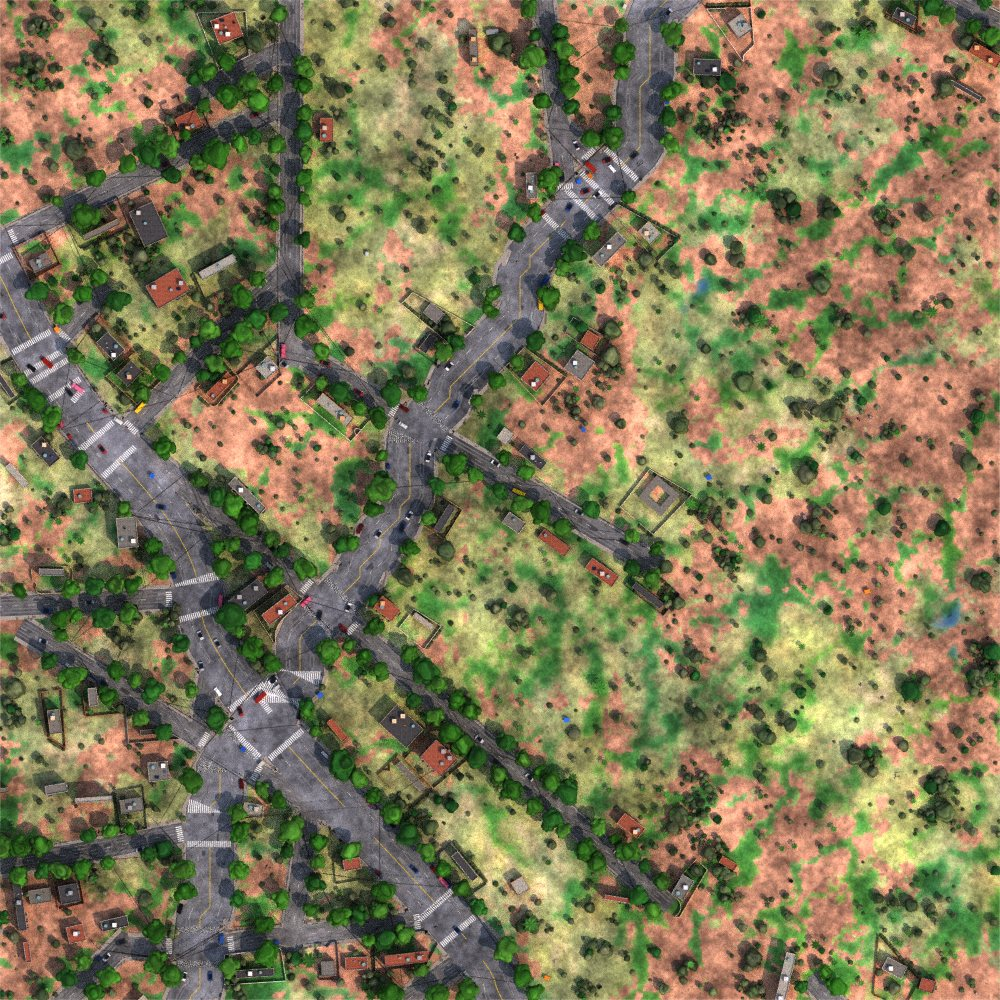

Every pixel labelled, because we drew it.
Synthetic imagery built to resemble the real world, and checked against it with both measurement and expert review. Rendered from satellite, drone and street-level cameras, with labels that come straight from the renderer: no annotators, no model, nothing to drift from the pixels.

One world, any camera.
The same seeded world renders from orbit, from a drone and from the street. A fixed seed gives the same world and the same object IDs every time, so a car in one frame is the same car in the next.

What is in the download.
Real GeoTIFFs you can open in QGIS or GDAL, and a manifest that says how they were made. The imagery is rendered, not photographed.
| rgb.tif | 3 × uint8, the rendered image |
|---|---|
| class.tif | 1 × uint8 with a colour table: ground, building, tree, vehicle, pole, person, drone, wall, yard object |
| instance.tif | 1 × uint16, one ID per object, stable for a given seed |
| sample.json | CRS, pixel size, class shares, sun angle, seed |
Class share in this tile
Straight from sample.json.
Representative of the real world, checked two ways.
Looking real is not enough. Worlds are grounded in real geography, then tested against real reference imagery so the synthetic scenes behave like the places they stand in for.
Measured
Class shares, colour, contrast, texture and edge statistics of every synthetic scene are compared with real reference imagery and plotted side by side. The gaps decide what we improve next.
Reviewed by eye
Side-by-side visual review catches what statistics miss: the wrong kind of roof, an unnatural tree line, a street that feels empty.
Grounded, then varied
Terrain, land cover and building footprints can come from open geodata. Procedural generators fill in the detail, and every seed gives a different but plausible world.
You can see where every pixel came from.
Synthetic data is only useful if you can trust what is in it.
Labels by construction
Class and instance masks are rendered by the same camera as the image. There is no annotator and no model in the loop, so there is no label noise.
Reproducible worlds
The same seed gives the same world, object for object. Every dataset ships with a manifest listing its layers and where each one came from.
Licensed assets only
Every material, texture and mesh is owned by us, CC0, or generated by a model with permissive output terms, and recorded in the manifest. No marketplace assets.
Need a different area, sensor or camera?
We build custom datasets to your spec. Tell us the area, the sensor, the pixel size and the classes you need, and we will tell you what we can render and how long it takes.
Email jian@abangai.dev